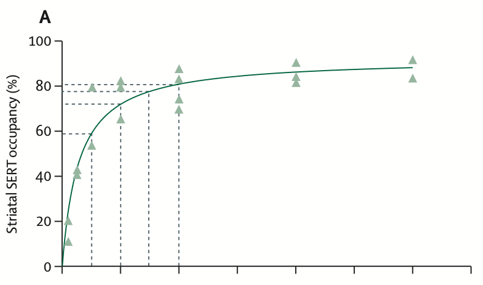
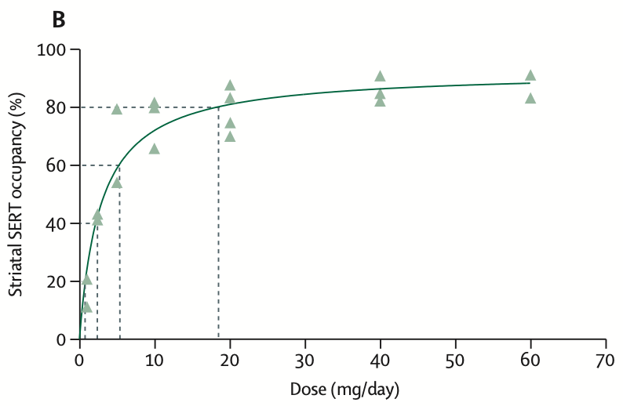

Recognize
SSRI adverse effects are common, often early, and usually manageable.
Unit 12 · Mental Disorders · Question 4
Ms. Lin developed diarrhea, appetite loss, and worsening insomnia soon after starting sertraline. She also feared that antidepressants might be addictive, so she stopped treatment on her own. This 15-minute report turns that clinical moment into a practical management framework.
Report map
SSRI adverse effects are common, often early, and usually manageable.
Educate first, then adjust timing, dose, or medication choice.
Antidepressants are not addictive, but abrupt stopping can cause withdrawal-like symptoms.
Adverse effect 1
Adverse effect 2
Adverse effect 3
Adverse effect 4
Special population
Around 11-14% of children and adolescents may experience activation syndrome, including irritability, agitation, impulsivity, emotional lability, hostility, restlessness, and aggression. Symptoms are especially prominent during the first weeks of treatment and are more common in children than adolescents.
The clinical implication is not simply to avoid SSRIs. It is to monitor mood, impulsivity, behavioral changes, and suicidality after initiation or dose changes.
may develop early activation symptoms during SSRI treatment
Clinical management
Adverse effects often precede benefit; response usually begins in 2-4 weeks and is assessed over 6-8 weeks.
Use a low starting dose and gradual titration. Pause or reduce temporarily if early adverse effects are limiting.
Take with food for GI effects; dose in the morning for insomnia; dose at night for sedation; ask about sexual dysfunction.
If insomnia and appetite loss persist, consider an alternative with a better fit for the patient's symptom profile.
剛開始服用抗憂鬱藥時，副作用可能比療效更早出現。這不代表藥物無效，也不代表你「不適合治療」。多數輕微副作用會在前幾週逐漸改善。
若出現自殺想法、衝動行為、嚴重躁動、高燒、肌肉僵硬或意識混亂，請立即就醫或聯絡急診。
High-stakes adverse effect
Serotonin syndrome results from excessive stimulation of central and peripheral serotonin receptors, particularly 5-HT1A and 5-HT2A. It is most concerning with serotonergic combinations or overdose.
Agitation, confusion, delirium, coma
Fever, diaphoresis, tachycardia, unstable blood pressure
Tremor, hyperreflexia, myoclonus, clonus
Medication belief
Craving, compulsive use, loss of control, escalating use, and continued use despite harm. SSRIs do not produce reinforcing euphoria.
Not a typical SSRI riskThe body adapts to the medication's presence. Stopping too quickly may feel uncomfortable, but this is not addiction.
Explain before prescribingAbrupt stopping or rapid tapering may cause dizziness, nausea, insomnia, electric-shock sensations, and irritability.
Prevent with taperingFINISH mnemonic
Discontinuation symptoms often emerge within days after stopping or rapid dose reduction. Timing and symptom pattern help distinguish discontinuation from depressive relapse.
Deeper dive

Linear here means equal dose steps on the x-axis, such as 20 → 15 → 10 → 5 → 0 mg. The uneven vertical drops are the problem: biological effect changes most near zero.

Hyperbolic tapering uses unequal dose steps that become smaller near zero, aiming for more even reductions in SERT occupancy and biological effect.
Redrawn for teaching from Horowitz MA, Taylor D. Tapering of SSRI treatment to mitigate withdrawal symptoms. Lancet Psychiatry. 2019;6(6):538-546.
PET studies suggest SSRI dose and serotonin transporter occupancy follow a hyperbolic relationship. At higher doses, a large milligram reduction may produce a small change in occupancy; near the end, a small dose reduction may produce a large biological change.
A linear taper such as 20 mg to 10 mg to 0 mg can create a steep drop in receptor occupancy at the final step. A hyperbolic taper uses smaller and smaller reductions, such as 20, 10, 5, 2.5, 1.25, 0.6, then 0 mg.
Gradual tapering has been reported to reduce discontinuation symptoms substantially, and CBT during tapering may help prevent relapse or recurrence. The pace should be individualized rather than forced into a fixed 2-4 week schedule.
Back to the patient
SSRIs are not addictive, but they should not be stopped abruptly.
Restart sertraline at a lower dose, take it after breakfast, and titrate gradually.
Assess suicidality closely during early treatment and before symptoms improve.
Board-style check
有關抗憂鬱藥物作用的敘述，下列何者正確？
trazodone 主要屬於 serotonin antagonist and reuptake inhibitor，具有 5-HT2 受體拮抗作用，也有鎮靜、助眠效果，因此除了抗憂鬱作用外，臨床上也常用於失眠明顯的病人。